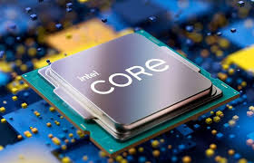

Podzespoły komputera
Procesor
 Procesor (ang. central processing unit, CPU) – sekwencyjne urządzenie cyfrowe, które pobiera dane z pamięci operacyjnej lub strumienia danych, interpretuje je i wykonuje jako rozkazy, zwracając dane do pamięci lub wyjściowego strumienia danych. Termin ten w zawężonym znaczeniu jest używany w odniesieniu do jednostki centralnej (CPU) systemu, ale odnosi się również do innych elementów przetwarzających dane zwanych koprocesorami, takich jak jednostki do obliczeń na liczbach zmiennopozycyjnych, przetwarzania grafiki (GPU).Technika wykonywania procesorów zmienia się wraz z rozwojem elektroniki. Pierwotnie procesory były konstruowane przy użyciu wielu lamp próżniowych, później wielu pojedynczych tranzystorów, które zastępowano układami scalonymi małej skali integracji. W latach 70. XX wieku skonstruowano procesory składające się z jednego lub kilku układów scalonych wielkiej skali integracji określane jako mikroprocesory. Od lat 80. XX wieku niemal wszystkie procesory wykonuje się jako monolityczne układy scalone.
Płyta główna
 Płyta główna (ang. motherboard, mainboard) – obwód drukowany urządzenia elektronicznego, na którym montuje się najważniejsze elementy, umożliwiając komunikację wszystkim pozostałym komponentom i modułom.
Płyta główna (ang. motherboard, mainboard) – obwód drukowany urządzenia elektronicznego, na którym montuje się najważniejsze elementy, umożliwiając komunikację wszystkim pozostałym komponentom i modułom.
W komputerze na płycie głównej znajdują się: procesory, pamięć operacyjna lub gniazda do zainstalowania tych urządzeń oraz gniazda do zainstalowania dodatkowych płyt zwanych kartami rozszerzającymi (np. PCI), oraz gniazda do urządzeń składujących (dyski twarde, napędy optyczne itp.), złącze klawiatury i zasilacza. W niektórych konstrukcjach także gniazda do innych urządzeń zewnętrznych, do których sprzęt znajduje się na płycie głównej (port szeregowy, port równoległy, USB).
Koncepcję zbudowania komputera osobistego wyposażonego tylko w minimum potrzebnych urządzeń zmontowanych na jednej płycie drukowanej oraz gniazd, do których podłącza się dodatkowe urządzenia, zapoczątkowała firma IBM, wprowadzając komputer osobisty, zwany też PC.
Pamięć masowa
 Pamięć masowa (ang. mass storage) – pamięć trwała, która umożliwia przechowywanie dużych ilości danych przez długi czas. W odróżnieniu od pamięci operacyjnej, nie pozwala na adresowanie pojedynczych bajtów, a jej czas dostępu przez procesor jest wielokrotnie dłuższy.
Pamięć masowa (ang. mass storage) – pamięć trwała, która umożliwia przechowywanie dużych ilości danych przez długi czas. W odróżnieniu od pamięci operacyjnej, nie pozwala na adresowanie pojedynczych bajtów, a jej czas dostępu przez procesor jest wielokrotnie dłuższy.
Urządzenia pamięci masowej należą do tzw. urządzeń blokowych.
Biorąc pod uwagę rodzaj zastosowanego nośnika danych można wyróżnić następujące rodzaje pamięci masowej: